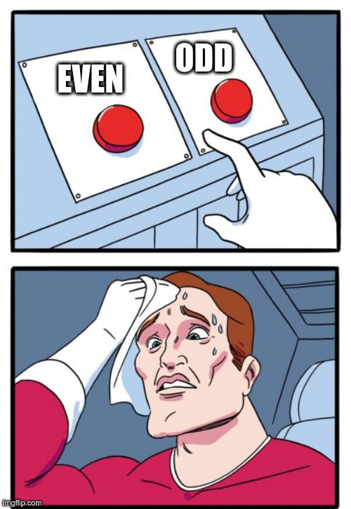

In what concerns the continuous evaluation solving exercises grade during the semester, you should submit until 23:59 of October 18th
(this exercise will still be available for submission after that deadline, but without couting towards your grade)
[to understand the context of this problem, you should read the class #02 exercise sheet]

Can you distinguish between odd and even numbers?Write a program that given a sequence of n positive integers, counts how many of them are even and how many are odd.
The first line of input contains an integer n, the size of the sequence to consider.
The following n lines describe the sequence. The (i+1)-the line contains si, the (i)-th element of the sequence s1, s2, ..., sn
The output should be a single line containing two integers separated by a single space: the first number should be the quantity of even numbers in the sequence and the second number should be the quantity of odd numbers.
The following limits are guaranteed in all the test cases that will be given to your program:
| 1 ≤ n ≤ 100 | Size of the sequence | |
| 1 ≤ si ≤ 10 000 | Integers in the sequence |
| Example Input | Example Output |
8 25 12 15 80 6 59 27 49 |
3 5 |
Explanation of the example input: there are 8 integers in the sequence. 3 of them are even (12, 80 and 6) and the other 5 are odd (25, 15, 59, 27, 49.)